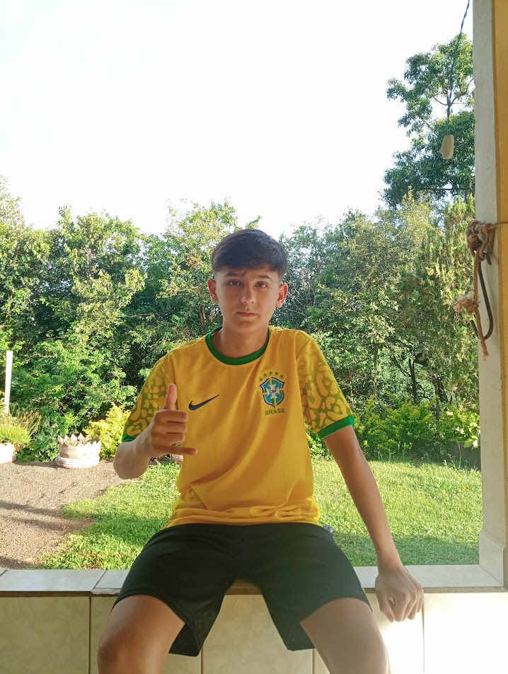

Quem eu sou...
Estudante no Colégio Reni Correia Gamper, cursando o segundo ano do ensino médio junto ao técnico em Desenvolvimento de Sistemas. Moro na Linha Seca, em Manoel Ribas, e tenho 16 anos. No dia a dia, busco sempre ser uma pessoa determinada, organizada e com facilidade para aprender coisas novas — características que me ajudam muito na programação. Fora dos estudos, sou apaixonado por futebol, tanto para assistir quanto para jogar, o que também desenvolveu em mim um forte espírito de equipe e cooperação.
Formações
- Curso: Jovem Agricultor Aprendiz
- Técnico em Desenvolvimento de Sistemas (Em andamento)
Habilidades
- Boa comunicação
- Trabalho em equipe
- Proatividade
- Raciocínio lógico
- Resolução de problemas
- Adaptabilidade
